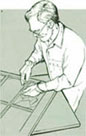

1 ) If the glass is shattered, use heavy leather gloves and remove the remaining shards. If the pane is cracked but intact, leave it in place until you've removed the glazing compound from around it.